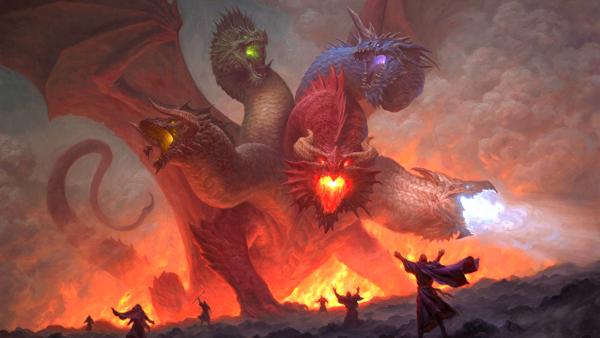
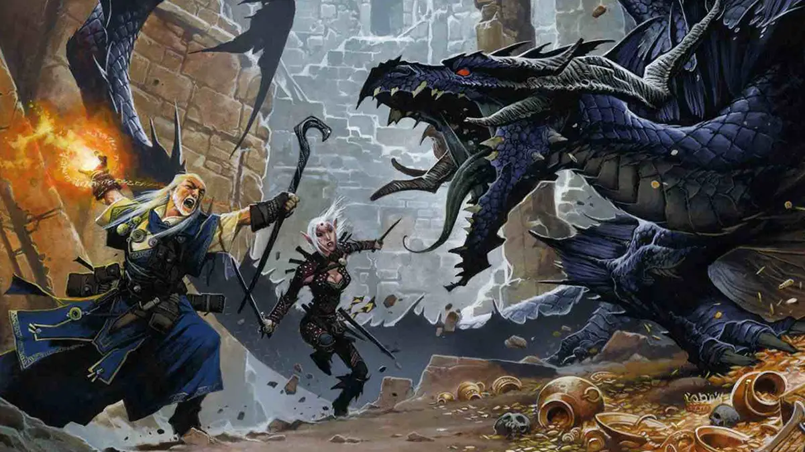
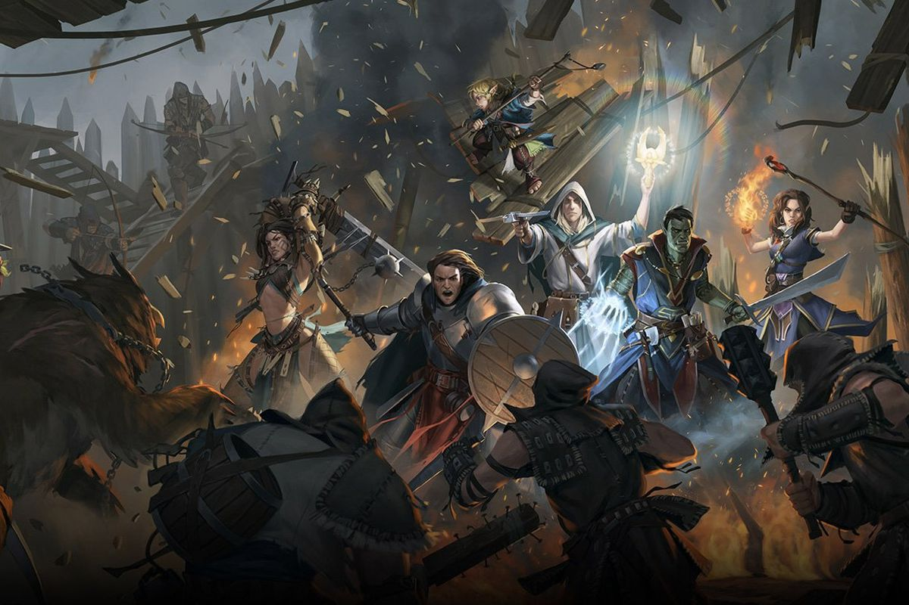
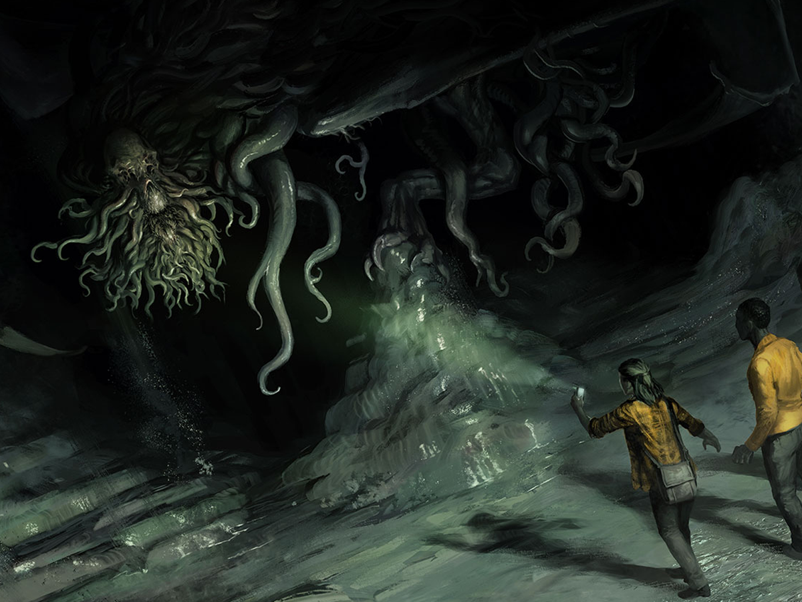

Recommendations:
- 
- 
- 
- 
Note:
- Pathfinder has more of an epic fantasy feel, while D&D is more geared towards traditional medieval fantasy.
- Pathfinder has more character classes and races than D&D, and it also has a better progression system for characters.
- Pathfinder uses a d20 system for resolving actions, while D&D uses a d6 system.
- Pathfinder is more complex and customizable, while D&D is more approachable for newbies who prefer a looser, faster-paced roleplaying experience.
Dugeon and Dragons 5e(DnD)
A cooperative, role-playing game where you and your friends create unique characters and embark on thrilling adventures. You control a character in a fantasy world, cooperating with your fellow players to overcome challenges and achieve common goals. One player takes on the role of the Dungeon Master (DM), who weaves together an engaging story and serves as a referee for the rules of the game. During your journey, you'll encounter various encounters, solve puzzles, and engage in combat. Success is determined by rolling dice and applying modifiers based on your character's skills and abilities. As your character experiences these adventures, they grow stronger, more skilled, and develop personal connections with the rest of the party.
Pathfinder 2nd Edition
Pathfinder is a rich and complex fantasy RPG that uses the same d20 ruleset at the core of Dungeons & Dragons. Players take on the role of heroic adventurers, often explorers and scholars employed by the Pathfinder Society, who travel the world solving problems, unravelling mysteries and collecting treasure. Characters are highly customisable and become more complex the longer you play, presenting players with escalating challenges as they must come up with the best ways to use their abilities to fight progressively more dangerous foes.
Cult of Cthulhu
In Call of Cthulhu, you take on the role of everyday people who become investigators of the unknown - whether they are prepared or not. The mysterious places, people, and situations you encounter are often not what they seem - you and your friends are the only thing standing in the way of diabolical cults and cosmic monsters from beyond space.